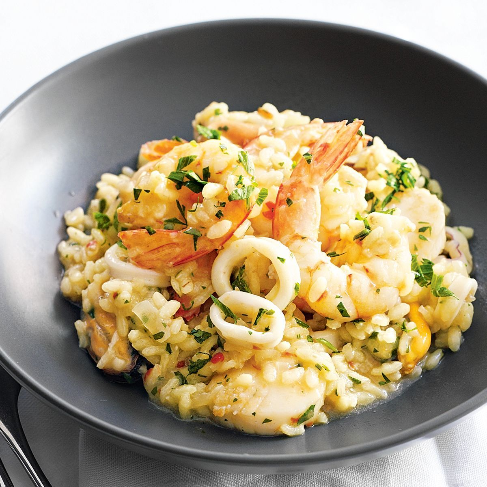

Seafood risotto is a creamy Italian rice dish made by slowly cooking arborio rice in broth while stirring continuously. It often includes shrimp, scallops, mussels, or clams for a fresh, ocean-inspired flavor. The rice releases starch as it cooks, creating a naturally creamy texture. It’s rich, comforting, and layered with delicate seafood flavor.